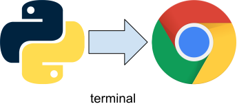
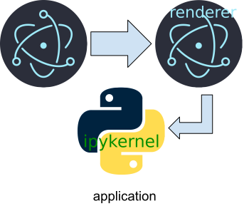

System Design¶
Note
Historical reference. This page describes the design and
implementation of the casagui package, as it stood after the
visualization trade study. cubevis grew out of that work. The page
is kept for reference and is not maintained; names, figures and plans in
it may no longer match cubevis. See Historical reference.
This design document describes the history, motivation and design of the cubevis system. This system includes the cubevis Python package and the cubevis application framework. The cubevis Python package is used by pipeline developers and other Python users to access cubevis functionality from Python. The cubevis application framework also uses the cubevis Python package. The design of the cubevis system allows the same Python functions to generate raster files for pipeline use, plots for Python users, and the visualization elements that are included in CASA desktop applications. Having a single implementation ensures consistency and minimizes development and maintenance.
Usage Settings¶
In addition to the desire to have a single implementation to provide the core visualization functionality, there are four settings where the single Python implementation will have to function. All of the cubevis functionality will not be available in all of these settings, but some subset will be available in all settings. The limits on applicability come from setting limitations (headless operation precludes direct user interaction) as well as platform limitations (Jupyter notebook model centers around evaluating a cell and receiving a response). We navigate these limitations as the cubevis system is built out with new GUI elements. The rest of this section will outline the usage settings for the cubevis system.
Headless¶

In many applications, user interaction is not possible. A display may not exist or it may not be accessible. One important area that the cubevis system must support is pipeline processing of data collected from radio telescopes. This processing happens after the data is collected by the online system and it generates the observation artifacts that are provided to investigators.
In the headless setting, the only process involved from the cubevis perspective is the Python process that imported the cubevis Python package, and the only display option available is the generation of raster files (png, jpg, etc.).
Terminal¶


The terminal setting is the typical Python usage setting. In this case, the user interacts with Python interactively, e.g. with IPython, or by running Python scripts from a terminal. A display is available, but no other support processes are available. The user installs the cubevis package into their python environment using something like pip. Because we want to avoid OS specific binary applications, all cubevis functionality in this setting is implemented in Python, and the frameworks which are leveraged in the implementation are also in Python. These individual frameworks may provide OS-specific implementations, but the cubevis Python package is isolated from the incompatibilities which such implementations entail.
In the terminal setting, the user’s web browser is the best display option. It is (hopefully) compatible with the cubevis application framework, and the user already has a browser that they use that is suitable for display. It is possible that some Python visualization packages also include a server for displaying information, and in some cases, this may be the only option. However, the only processes that are available in the terminal setting are those that the user is expected to have (browser) and those that come with standard Python packages.
Application¶


The application setting is in some respects a new setting for CASA. Although CASA has had applications in the past, for example casaviewer, casaplotms, etc., these have been purpose-built applications that were implemented separately from the main CASA Python application. Typically, these applications leveraged some portion of the C++ code that underlies the implementation of the casatools. This implementational separation from Python made it difficult to implement a Python scripting interface for the purpose-built, stand-alone applications.
The cubevis system takes a different approach. The cubevis Python package and its application framework, Electron, are leveraged to create a platform for hosting all of the visualization applications in the cubevis system. All of these applications will be hosted by a single, running instance of the application framework. This is possible because the framework is built on Chromium, the same application framework that underlies the Google Chrome browser.
In the application setting, we have much more flexibility and control than in any of the other settings. Here we leverage the Jupyter Protocol and the IPython kernel that goes along with it. The same cubevis python package used in the other settings is imported into the IPython kernel and generates the visualization elements that go into producing standalone applications. These applications are too complex to be implemented using currently available python frameworks. By using Electron and the tools that are available in TypeScript/JavaScript, the same plots that are available to users in the other settings can be incorporated into much more capable and wide ranging applications in this setting. A plot that is generated in the headless setting for saving to a raster file will be identical to the plot displayed in our Electron application, since they use the same cubevis Python implementation.
Notebook¶

The GUI elements available in the notebook setting will be a subset of those available in the application setting. However, because our application framework and Jupyter notebooks share the same underlying protocol, many of the plots generated by the common cubevis Python package will just automatically work in the notebook setting. While notebooks are very useful for collaboration and documentation, this is the least important of the usage settings we are targeting, but we structured our architecture to support notebook display as much as possible.
This setting is less general than the application setting. When users interact with a Jupyter notebook, they may not realize that there is an execution context (typically Python) underlying the notebook web page. Here our process diagram (above) looks below the surface to expose the similarities between the notebook setting and our application setting. They share a communication protocol and an execution environment in common.
The notebook setting is constrained by the limitations of the Jupyter notebook architecture. Most of the individual plots that the cubevis Python package is capable of creating should display fine within a notebook. The very complicated applications which can be created in the application setting will not be available in the notebook setting.
Design Documents¶
The cubevis design documents are available for more detailed discussions about the implementation of specific tools and applications.